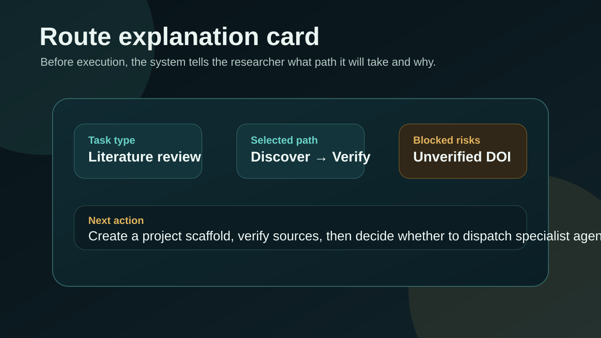
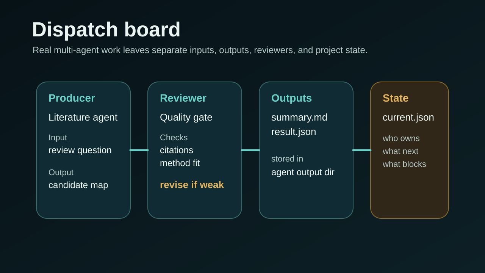
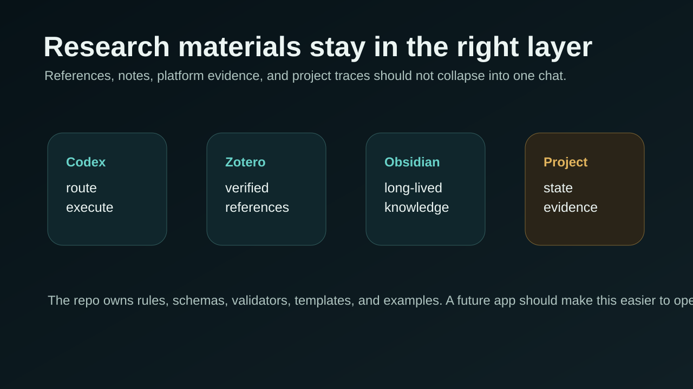

Choose the right kind of work
Before tools start running, the system explains what kind of task this is and what it plans to do next.
Codex Research Stack is a research workbench for Codex. It helps you start with a clearer route, keep project state visible, and keep references, writing, and reproducibility checks in view before the project becomes hard to inspect.

Research work often becomes confusing before the real analysis even begins. This stack focuses on that earlier layer: task choice, project coordination, and visible checkpoints.
Before tools start running, the system explains what kind of task this is and what it plans to do next.
Project work becomes a visible workspace with roles, review steps, and progress traces instead of one giant conversation.
References, writing quality, and reproducibility stay in view as explicit checks rather than hidden assumptions.
The quick demo shows one project-shaped task moving from prompt, to route explanation, to dispatch, to reviewer gate.



You do not need to learn the whole system first. The public explanations now live in one place, so you can jump straight to the chapter you need.
The visuals below summarize the workspace view and the project checks without assuming you already know the internal terms.


This repo does not try to replace Codex. It gives research work inside Codex a clearer structure.
The point is not to sound clever. The point is to leave behind files, checks, and handoffs that a person can read later.